Robotic-harness · 归档于 2026-10-16
RPent
Harness VLA: Steering Frozen VLAs into Reliable Manipulation Primitives via Memory-Guided Agents
arXivPDF Project pageCode · RPentRPent docs
归档到 Robotic harness：一个 coding-agent harness（Claude Code / Codex planner、JSON primitive、文件式 REPL、memory）驱动冻结的 VLA，评测包括 LIBERO-Pro 和 RoboTwin。RPent 是它的代码框架（RLinf/RPent），论文里的方法叫 Harness VLA；RPent 的 README 称本文为 “our first RPent publication”。
TL;DR
- Problem
- VLA 在训练分布里抓得准，可指令一改目标、物体一换位置就失灵；coding agent 会推理，但用解析控制器抓不好不规则物体。
- Idea
- 把冻结的 VLA 包成一个可重试的 primitive
VLA_ACT，由 Claude Code / Codex planner 把它和 6 个固定的 analytic primitives 组合起来；seed 0 上探索写下的 memory 告诉 planner 何时、怎样调用它。 - Result
- 同一个 VLA 在 LIBERO-Pro 上从 50.0% 到 82.4%（最强的已报告 baseline RATS 43.8%）；RoboCasa365 57.2% vs RLDX-1 30.0%；RoboTwin C2R 58.4% vs 50.4%；VLA 不 fine-tune（Table 3、4、6）。
Problem
物体一换位置，同一个 VLA 在 LIBERO-10 上从 89% 掉到 14%
Running example · 后面每个 stage 都跟着它走
Cream-cheese box → basket（Fig. 7 上排）：LIBERO-10-Pro 的一个 swap（S）任务，instruction 不变，物体初始位置被交换或重排（App. C.2）。Planner 拿到 instruction、agentview 和 wrist 相机的 RGB-D 与 world map、robot state（eef_pos [x,y,z]、eef_quat、gripper_qpos），拿不到物体坐标。
→ 想要：抓起 cream-cheese box 放进 basket，由 benchmark 信号 libero_terminated 确认。手里的 VLA 是冻结的 πRLinf（RLinf 发布的 pi05_libero130_fullshot π0.5-SFT checkpoint）。论文没给这个任务的完整 instruction，caption 称这是任务中的一个 subtask。
flowchart LR IN["例子输入
L10-S：物体换位
盒子 → 篮子"] --> A1["A · End-to-end VLA
一个 policy 管到底"] A1 --> AX["第一步就偏
照训练时的动作做
L10-S 0–8%"]:::gap IN --> B1["B · 同一 VLA 直接跑
πRLinf，不加 harness"] B1 --> BX["找目标 + 接触
往训练位置送
L10-S 14%"]:::gap IN --> C1["C · Coding agent
Cap-X、RATS 写代码"] C1 --> CX["抓盒子
靠纯解析控制器
L10 两格未报告"]:::gap
| Baseline | 怎么做 | 在例子上哪里坏 | 结果 |
|---|---|---|---|
| A · End-to-end VLA（OpenVLA、π0、π0.5、MolmoAct、NORA、X-VLA、AtomVLA） | 一个 policy 从 instruction + 图像直接出动作，理解、找目标、长程组合、接触都在里面 | 第一步：物体换了位置，policy 仍照训练时熟悉的动作去抓、去放（§1） | L10-S 0.0–8.0 （π0.5 最高，Table 3） |
| B · 同一个 frozen VLA 直接跑（πRLinf，就是 VLA_ACT 里那个 checkpoint） | 不加 harness，整段任务交给它 | 找目标 + 接触：换位后把物体往训练时的位置送（Fig. 3 Goal-S）；一次接触失败（如 Fig. 7 第 2 帧的抓空）就可能拖垮整段（§1） | L10-S 14.0 标准 LIBERO-10 89.0 （Table 2、3） |
| C · Coding agent + 解析 primitive（Cap-X、RATS） | LLM 写程序，调用感知和运动 API，接触也由解析控制器完成 | 抓盒子：纯解析的 primitive 不擅长 irregular grasping 和 constrained placement（§1） | L10 两格未报告 6 格平均 18.2 / 43.8 （Table 3） |
“哪里坏”是按论文 §1 和 Fig. 3 的描述推到这个例子上的推断：论文只报告每格的成功率，没有给 baseline 在这个任务上的画面。Cap-X、RATS 只报告了 6 个非 LIBERO-10 的格子（Table 3 里是 “/”）。
根本问题：每类方法都让一个组件扛了太多：VLA 要同时理解指令、找目标、做长程组合和接触；coding agent 要用解析控制器做精细接触（§1）。 这篇的切入点：VLA 冻结不动，只在局部接触时被调用（VLA_ACT）；找目标、摆位、搬运、松手交给 planner 和固定的 analytic primitives，seed 0 上学到的 memory 告诉它怎么分工。
Level 1 · Big picture
VLA 只在它熟悉的局部做接触，planner 用固定的 primitives 把机器人送进这些局部
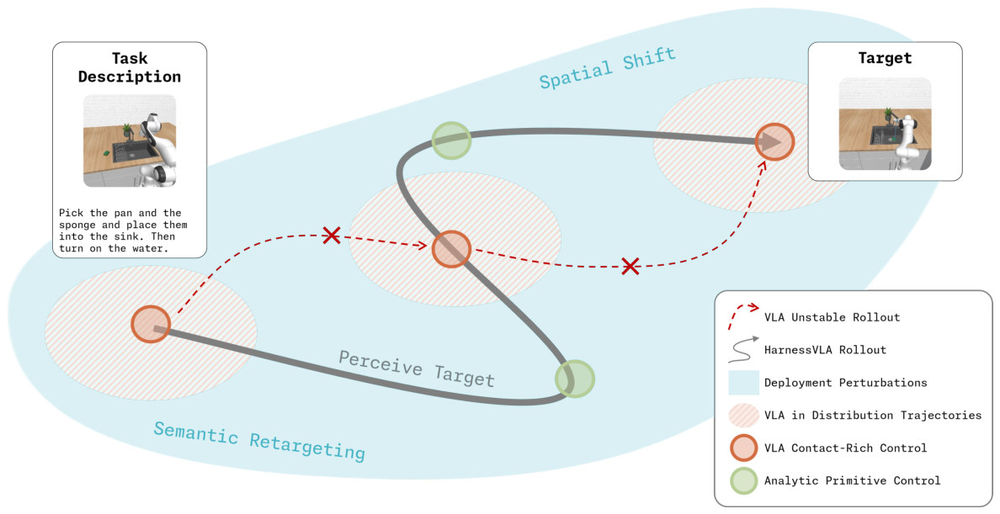
怎么读这张图
- 左上 "Task Description"：示意任务 "Pick the pan and the sponge and place them into the sink. Then turn on the water."，是厨房任务，不是我们的例子。
- 淡蓝色大区域 "Deployment Perturbations"：任务沿 "Semantic Retargeting"（改目标）和 "Spatial Shift"（换位置）两个方向偏离训练分布。
- 斜线椭圆 "VLA in Distribution Trajectories"：VLA 训练时见过的局部区域。
- 红色虚线 "VLA Unstable Rollout" 和 ✗：VLA 直接跑，想跨过扰动后的空间，中途失败。
- 灰色实线 "HarnessVLA Rollout"：绿圈 "Analytic Primitive Control"（含 "Perceive Target" 一段）在椭圆之间移动；橙圈 "VLA Contact-Rich Control" 只出现在椭圆里；终点是右上 "Target"。
- 对应例子：橙圈 = 两次 VLA_ACT 抓盒子；绿圈 = 找到换位后的盒子、MOVE_TO 搬到篮子上方、RELEASE。
flowchart TD IN["Input
instruction + RGB-D
物体已换位"] --> PL["Agentic planner
Claude Code · Opus 4.7"] MEM["Memory
seed 0 trace + 规则"] -->|"few-shot 上下文"| PL PL -->|"局部接触"| VLA["VLA_ACT
冻结的 πRLinf 抓盒子"] PL -->|"找目标、搬运、松手"| AN["Analytic primitives
MOVE_TO、RELEASE"] VLA --> OUT["Output
盒子进篮
L10-S 14% → 62%"]:::win AN --> OUT
Level 2 · Stages
5 个 stage：先在 seed 0 上学，再在新 seed 上用；外加一个贯穿全程的 harness
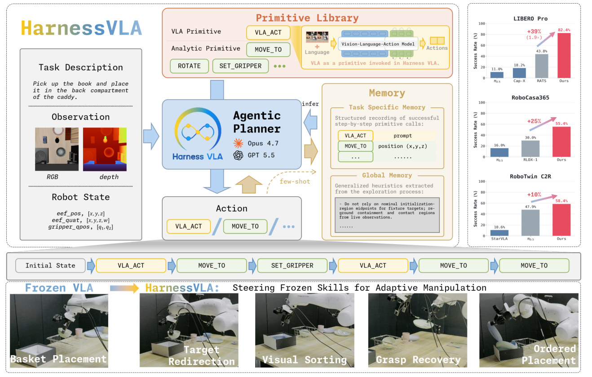
怎么读这张图
- 左 "Task Description" / "Observation" / "Robot State"：planner 的全部输入：任务文字、RGB 和 depth、eef_pos、eef_quat、gripper_qpos。这里的示意任务是 "Pick up the book and place it in the back compartment of the caddy."。
- 中 "Agentic Planner"（Opus 4.7、GPT 5.5）：即 Claude Code 和 Codex 两种 planner；向下输出 "Action"：VLA_ACT / MOVE_TO / …（Stage 3、4）。
- 上 "Primitive Library"："VLA Primitive" 只有 VLA_ACT，右边小图注明 "VLA as a primitive invoked in Harness VLA."；"Analytic Primitive" 有 MOVE_TO、ROTATE、SET_GRIPPER 等（All stages）。
- 右 "Memory"："Task Specific Memory" 记成功的逐步调用（VLA_ACT 的 prompt、MOVE_TO 的 position (x,y,z)）；"Global Memory" 记探索中提炼的规则，例如 "Do not rely only on nominal initialization-region midpoints for fixture targets; re-ground containment and contact regions from live observations."（Stage 1、2）。
- "infer" 和 "few-shot" 箭头：planner 从 memory 读取上下文，memory 以 few-shot 的形式进入下一次决策。
- 中间命令条 "Initial State → VLA_ACT → MOVE_TO → SET_GRIPPER → VLA_ACT → MOVE_TO → MOVE_TO"：VLA 调用和 analytic 控制交替，和例子的 Fig. 7 是同一种形态。
- 最右三个柱状图：LIBERO Pro 82.4% vs RATS 43.8%（+39%，1.9×）；RoboTwin C2R 58.4% vs π0.5 47.9%（+10%）。RoboCasa365 一栏画的是 55.4% 和 π0.5 16.0%，和 Table 4（57.2 / 48.8，π0.5 16.9）对不上，像是旧版本的数字（推断）。
- 底排真机（dual-Franka）："Frozen VLA" 只会 "Basket Placement"；Harness VLA 做出 "Target Redirection"、"Visual Sorting"、"Grasp Recovery"、"Ordered Placement"（见 Results 的 Fig. 8）。
flowchart TD S1["1 · Bootstrap on seed 0
试到成功，写 memory"] --> S2["2 · Re-ground
新 seed：找到换位的盒子"] S2 --> S3["3 · VLA_ACT + retry
抓空 → 退回 → 再抓"] S3 --> S4["4 · Analytic finish
MOVE_TO → RELEASE"] S4 -->|"成功的 runs"| S5["5 · Flash Mode（可选）
task card 重放"] click S1 href "#stage-1" click S2 href "#stage-2" click S3 href "#stage-3" click S4 href "#stage-4" click S5 href "#stage-5"
点击 stage 展开 Level 3 细节。每个 stage 都通过同一个 harness：固定的 primitive library + 文件式 REPL 行动。
Level 3 · Details
每个 stage 的细节
Stage 1 Bootstrap on seed 0（Exploratory Bootstrapping） 任务 + reference seed s0（可 RESET）→ Task Specific Memory + Global Memory
- Why：primitive 词表是固定的，要学的是怎么编排它们；这一步给 Stage 2–4 准备好“怎么做”的骨架和“别怎么做”的规则。
- How：只在 reference seed s0 上探索；只有这个阶段能用 RESET，wall-clock budget 宽裕（具体数值没报告）。
- How：planner 反复试 staging 顺序、pre-contact 姿态、VLA_ACT 的调用时机、early-return 阈值；观察每个 primitive 的物理效果，失败就改（§2.2）。
- How：成功后，把验证过的 primitive 序列存成 JSONL：Task Specific Memory 的 trace。
- How：再写一份 audit JSON（summary）：outcome、strategy、recovery 决策、failure modes。
- How：跨任务的经验提炼进 Global Memory：success rules 和 failure models。
- How：memory 边做边写：每个 primitive 之后把结果归为 progress、recoverable failure 或 unrecoverable failure；更短或更稳的 trace 可以替换旧的，失败留作负例（App. A）。
- 注意：s0 不计入报告；LIBERO-Pro 每个任务报告 s1–s10 共 10 个 seed（App. C.2）。
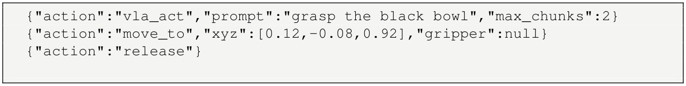
怎么读这张图
- 第 1 行 "vla_act"："prompt":"grasp the black bowl"、"max_chunks":2：让 VLA 抓碗，最多 2 个 action chunk。
- 第 2 行 "move_to"："xyz":[0.12,-0.08,0.92]：解析搬运。这些坐标属于 s0 的场景，部署时不能照抄（Stage 2）。
- 第 3 行 "release"：松手。配套的 summary 写着 "strategy":"use VLA for grasping, then analytic transport and release"，"avoid" 里有 "do not reuse reference xyz values" 和 "verify placement with the benchmark success signal"。
- 读图提示：§2.2 说 trace 里的具体坐标会换成符号化的感知查询，这个例子却仍留着 s0 的 xyz，靠 "avoid" 和部署规则禁止照抄。
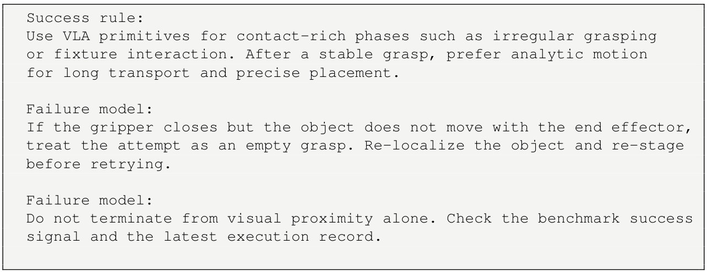
怎么读这张图
- "Success rule"：接触多的阶段（irregular grasping、fixture interaction）用 VLA；抓稳之后，长距离搬运和精确放置用 analytic motion。对应例子：VLA_ACT 抓盒子，MOVE_TO 搬到篮子。
- 第一条 "Failure model"：夹爪合上而物体不跟着末端动，就记为 empty grasp，重新定位物体、重新 staging 再试。对应例子：Fig. 7 第 2 帧（Stage 3）。
- 第二条 "Failure model"：不凭视觉上“看着到了”就结束，要查 benchmark success signal 和最新的执行记录。对应例子：RELEASE 之后看 libero_terminated（Stage 4）。
flowchart TD T["在 s0 上试一种编排
staging、VLA 时机"] --> R["执行，看效果
每步记 progress / failure"] R -->|"失败：改，或 RESET 重来"| T R -->|"benchmark 信号成功"| M1["Task Specific Memory
JSONL trace + audit JSON"]:::win R -->|"提炼经验"| M2["Global Memory
success rules
failure models"]:::win
Running example 在这一步
- 在这个 LIBERO-10-Pro 任务的 s0 上探索，直到 benchmark 信号成功，再存 trace 和 audit。
- 论文没打印这个任务的 trace；按 App. A 的格式和 Fig. 7 的动作顺序，抓盒子这一段的骨架应是 VLA_ACT → MOVE_TO → RELEASE（推断）。
- 盒子和篮子在 s0 里的坐标只是参考，部署时要重新定位。
Stage 2 Re-ground on a new seed（Deployment Evaluation） 新 seed 的 RGB-D + memory → 绑定到当前场景的目标和参数
- Why：对应 A、B 类的坏点：VLA 不会自己把指令重新绑定到新的布局上（Fig. 3）。
- How：部署评测在 s1–s10 上进行：RESET 完全关闭，step budget 明显缩短（数值没报告）。
- How：先读 audit JSON，弄清策略为什么成功、要避开什么；再读 JSONL 拿 primitive 顺序；Global Memory 补充规则（App. E.3、E.4）。
- How：“never replay literal coordinates”：s0 的 xyz、xy、quat、像素位置、base pose、fixture 坐标全部作废，每个物体、目的地、支撑面、fixture 都从当前图像和 world map 重新定位。
- How：定位：在 RGB 上认出物体 → 在它的可见表面上取像素 → 查预先算好的 world map → 多个稳定像素取 median；避开边缘、缝隙、反光和背景（App. E.2）。
- How：机器人、相机、物体、base、fixture 或抓取状态一变，就重新定位。
- How：perception isolation：state 文件只给物体名字和 proprioception，不给物体坐标、真值 pose 或 simulator 内部状态。
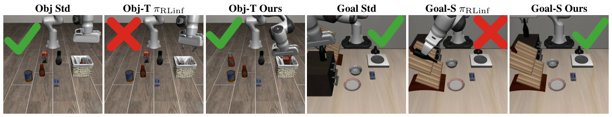
怎么读这张图
- "Obj Std" ✓：标准 Object 任务，πRLinf 能完成。
- "Obj-T πRLinf" ✗：instruction 改指另一个目标，画面几乎不变，πRLinf 照做标准任务的动作，不跟新指令（caption）。
- "Obj-T Ours" ✓：Harness VLA 按新 instruction 完成。
- "Goal Std" ✓ → "Goal-S πRLinf" ✗：布局换了，πRLinf 还是把物体往训练时的区域送。
- "Goal-S Ours" ✓：planner 重新找到目标，用 analytic primitives 做 staging，再调 VLA_ACT 做局部接触。
- 对应例子：cream-cheese 任务也是 S（换位），和右边三张同属一类扰动。
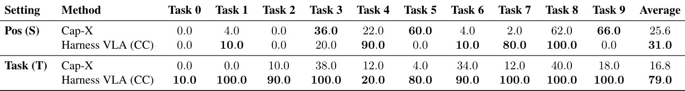
先看 Average 列：zero-shot 的 CC 在 Task (T) 79.0、Pos (S) 31.0；同一 Goal 套件 few-shot 两格都是 87.0（Table 3）。换位最依赖 seed 0 memory：Pos (S) 里 Task 0、2、5、9 全是 0.0。
flowchart LR A["读 memory
audit → JSONL"] --> B["RGB 上认物体
cream-cheese box"] B --> C["像素 → world map
多像素取 median"] C --> D["绑定参数
盒子的新位置"]:::win
Running example 在这一步
- 换位之后，s0 里盒子和篮子的坐标全部作废。
- planner 在 agentview RGB 上认出 cream-cheese box，取盒子可见表面的像素，查 world map 得到它现在的 3D 位置。
- 骨架沿用 s0：先 VLA_ACT 抓，再 analytic 搬运和放下；参数全部来自当前观测。
- 没有 seed 0 memory 会怎样：Goal 套件 zero-shot 在 S 上只有 31.0%，few-shot 87.0%（Table 3、5）。LIBERO-10 没做 zero-shot。
Stage 3 Staged VLA_ACT + retry（Key Finding 2） pre-contact 位置 + prompt → 稳定的抓取（不稳就重试）
- Why：对应 B 类的坏点：一次接触失败不再拖垮整段，只让当前这一小步重来。
- How：先用 analytic primitive 把机器人摆到 VLA 熟悉的局部视角和 pre-contact 姿态（staging）。
- How：发 VLA_ACT：{"prompt", "max_chunks", "stop"}；冻结的 VLA 连续输出 action chunk，直到 stop predicate τ 满足或 chunk 用完（§2.3）。
- How：τ 可以是 lift-and-grasp、contact state、benchmark predicate 或 chunk budget（App. B）。
- How：之后检查 state、log、RGB、world map：夹爪合上而物体不跟着动 = empty grasp（Global Memory）。
- How：抓空或位置不对 → 重新定位、重新 staging，再调 VLA_ACT。VLA 是被稀疏地调用的，不是连续控制。
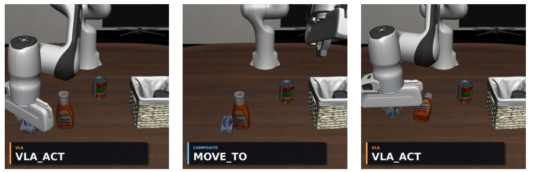
怎么读这张图
- 第 1 帧 "VLA_ACT"（橙标 VLA）：VLA 去抓左下角的 cream-cheese box。
- 第 2 帧 "MOVE_TO"（蓝标 COMPOSITE）：手臂已经往篮子走，盒子却还躺在橙色瓶子旁边：VLA 并没有真的抓住，planner 在 MOVE_TO 途中发现了这一点（caption）。
- 第 3 帧 "VLA_ACT"：planner 退回去，再调一次 VLA。橙色瓶子在这一帧被碰倒（图上可见，论文没提）。
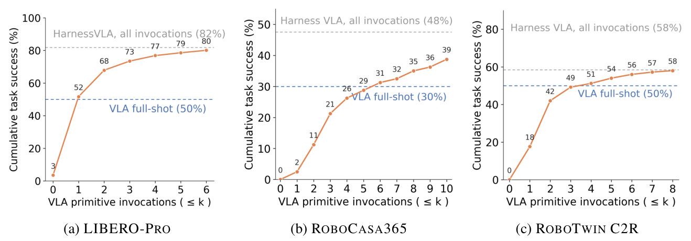
怎么读这张图
- 横轴 "VLA primitive invocations (≤ k)"：每个 episode 最多允许 k 次 VLA_ACT。
- 蓝虚线 "VLA full-shot"：同一个 VLA 直接跑：LIBERO-Pro 50%、RoboCasa365 30%、RoboTwin C2R 50%。
- 灰虚线 "all invocations"：不限次数的 Harness VLA：82%、48%、58%。
- (a) LIBERO-Pro：k=0 时 3%；1 次就 52%，已超过 VLA 自己跑的 50%；2 次 68%，6 次 80%。
- (b) RoboCasa365：上升慢：5 次 29%，6 次 31% 才过 30%，10 次 39%。
- (c) RoboTwin C2R：3 次 49%，4 次 51% 过 50%，8 次 58%。
flowchart TD S["Staging
退回盒子旁"] --> V["VLA_ACT
冻结的 πRLinf 抓盒子"] V --> C["检查
盒子跟着夹爪动了吗"] C -->|"empty grasp：重新定位"| S C -->|"抓稳"| N["交给 Stage 4
analytic 搬运"]:::win
Running example 在这一步
- 第 1 次 VLA_ACT 之后，planner 直接 MOVE_TO 往篮子走，途中发现盒子还在桌上：empty grasp。
- 和 Global Memory 的 empty-grasp 规则一致：退回去，再调一次 VLA_ACT；第 2 次抓住了，才交给 Stage 4。
- 这个例子的 prompt、max_chunks、stop 论文没给；App. B 的通用例子是 "grasp the black bowl"、30、"object_lifted"。
- 整体上：LIBERO-Pro 允许 1 次 VLA 调用就有 52%，不限次数 82%（Fig. 4a）。
Stage 4 Analytic finish（Key Finding 3） 稳定的抓取 → 盒子进篮，benchmark 信号确认
- Why：对应 C 类的反面：接触留给 VLA；analytic primitives 只做接触之外的事：自由空间搬运、pre-contact staging、wrist 或 base 转向、后撤、接触后挪位（§3.3）。
- How：抓稳之后用 MOVE_TO 搬运和放置（Global Memory 的 success rule），RELEASE 松手。
- How：收尾不凭“看着到了”，要查 benchmark success signal 和最新的执行记录（failure model）。
- How：下一个需要接触的阶段开始时，再调 VLA_ACT。
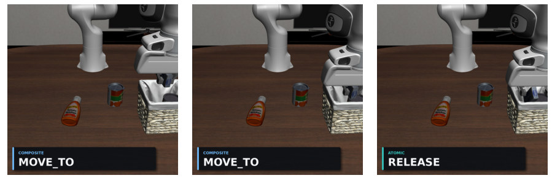
怎么读这张图
- 第 4 帧 "MOVE_TO"：盒子已在夹爪里，被搬到篮子上方；被碰倒的橙色瓶子还躺在桌上。
- 第 5 帧 "MOVE_TO"：下放进篮子。
- 第 6 帧 "RELEASE"（绿标 ATOMIC）：松手，盒子留在篮子里，subtask 完成。
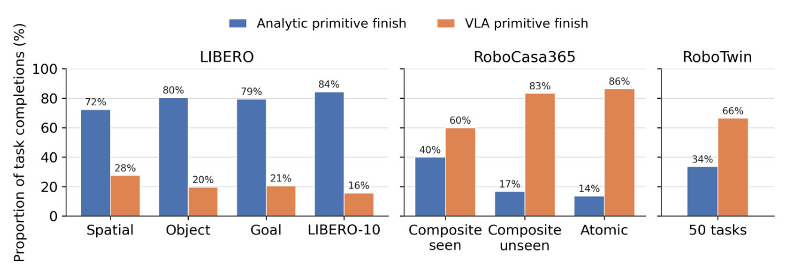
怎么读这张图
- 蓝 "Analytic primitive finish" / 橙 "VLA primitive finish"：按最后一个触发完成判定的 primitive 分类。
- 左组 "LIBERO"：Spatial 72%、Object 80%、Goal 79%、LIBERO-10 84% 由 analytic 收尾；例子属于 LIBERO-10 这一列。
- 中组 "RoboCasa365"：反过来，Composite seen 60%、Composite unseen 83%、Atomic 86% 由 VLA 收尾：厨房任务的最后一步常是 fixture actuation 或 constrained placement。
- 右组 "RoboTwin"（50 tasks）：66% 由 VLA 收尾，最后一步多是双臂接触。
flowchart LR A["MOVE_TO
盒子到篮子上方"] --> B["MOVE_TO
下放"] B --> C["RELEASE
松手"] C --> D["查 success signal
libero_terminated"]:::win
Running example 在这一步
- 第 4–6 帧全是 analytic：MOVE_TO → MOVE_TO → RELEASE。
- 和 Fig. 6 的 LIBERO-10 一致：84% 的成功 rollout 由 analytic primitive 收尾。
- 调用量：LIBERO 系列上 MOVE_TO 占全部 primitive 调用的 61.8%，VLA_ACT 只占 15.8%（Table 19）。
Stage 5 Flash Mode（可选） 成功的 runs → task card → 不经 planner 重放
- Why：在线 planner 慢：Codex 高推理时每个 episode 的 planner 时间平均 529.23 s（Table 7）。
- How：每次成功的 agent run 编译成一张候选 card：primitive 顺序、VLA prompts、非空间参数。
- How：水平距离某个 anchor 0.20 m 以内的 MOVE_TO / MOVE_POSE waypoint 存成相对 anchor 的偏移 Δx = xref − aref。
- How：部署：VLM 在 RGB 上找到 anchor，用 depth 和相机标定反投影成 3D â，waypoint = â + Δx（Eq. 1）。
- How：最多 3 次抓取尝试；抓取没确认就跳过后面的搬运；anchor 找不到就停。
- How：每个任务选成功率最高的一张 card（max-card）；选卡和报告用同一批 seed，作者说这是回顾式的最好结果，可能偏乐观（App. G）。
- 适用范围：subgoal 顺序固定、目标能直接定位；新 subgoal、改顺序、意外的恢复仍要在线 planner。
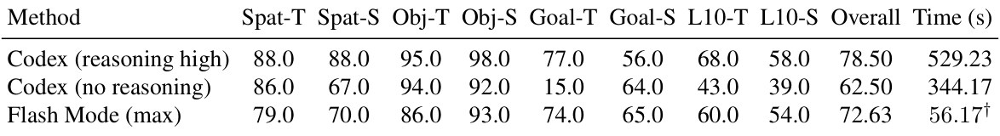
先看 Overall：Flash (max) 72.63%（581/800），介于 Codex 高推理 78.50% 和无推理 62.50% 之间。Time 一列口径不同，作者说不能当作端到端加速。这批 Codex runs 和 Table 3 不是同一批。
flowchart LR R["成功的 runs
多张候选 card"] --> C["编译
顺序 + prompt + 偏移"] C --> S["同批 seed 选卡
max-card"] S --> P["重放，无 planner
VLM 找 anchor"]:::win
Running example 在这一步
- 这个任务的成功 runs 编译成 card：VLA_ACT 抓盒子 → MOVE_TO → RELEASE，篮子上方的 waypoint 存成相对篮子的偏移（推断：论文没打印这张 card）。
- 例子所在的 L10-S 格：Flash (max) 54.0，Codex 高推理 58.0，无推理 39.0（Table 7）。
- LIBERO-Pro 80 个任务里 78 个有 card；goal_swap_t0 和 10_swap_t9 没有成功的源 trace，各记 0/10。
All stages Harness：固定的 primitive library + 文件式 REPL 一条 JSON 命令 → 一个 primitive → 一组新的观测文件
- Why：planner 不直接发力矩、关节目标或 action chunk，只选 primitive、填参数；词表在评测前固定，planner 不能发明新 primitive（§2.3）。
- How：6 个 analytic primitive（MOVE_TO、MOVE_POSE 是 composite；ROTATE_WRIST、ROTATE_PITCH、SET_GRIPPER、RELEASE 是 atomic）+ 1 个 VLA_ACT。
- How：RoboCasa365 加 NAVIGATE_TO、MOVE_BASE；RoboTwin 不加新名字，用 arm 参数绑左臂、右臂或双臂。RESET 只在探索期可用，不算 manipulation primitive。
- How：文件式 REPL（App. A）：长驻的 worker 独占 simulator；planner 写 command.json → worker 执行 → 写 state_NN.json、RGB-D / world map、log_NN.json、done_NN.flag → planner 读完再决定下一条。NN 从 00 起单调递增。
- How：每个 benchmark 的冻结 VLA 都包成 VLA_ACT：LIBERO / LIBERO-Pro 用 πRLinf，RoboCasa365 用 RLDX-1，RoboTwin 用作者 post-train 的 LingBot-VLA。
- How：planner 是 Claude Code（Opus 4.7）或 Codex（GPT-5.5）；App. H 另测了 Codex（GPT-6 Astra，low reasoning）。
- How：prompt 是一份共享骨架（App. E）：角色和 success signal、perception isolation、文件 REPL、primitive 词表、VLA 分工、task language、seed 0 memory、Global Memory、闭环恢复、budget 和 reset、输出要求，加一个 operating loop；每个 benchmark 只填槽位。
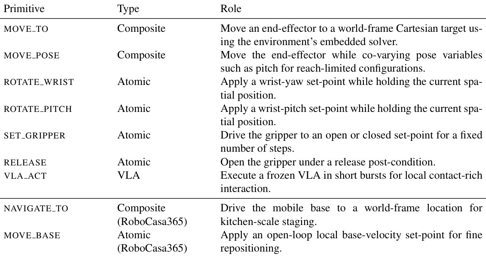
先看 Type 列：Composite 用内置 solver 协调多个自由度，Atomic 只把一个通道驱动到 set-point，VLA_ACT 单独一类 "VLA"（"Execute a frozen VLA in short bursts"）；横线下两行只在 RoboCasa365 用。
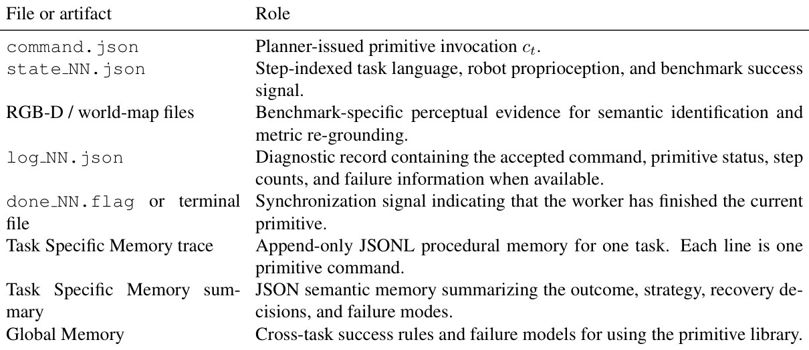
前五行是每一轮的命令和观测，后三行是 memory：trace 是 append-only 的 JSONL，summary 是 JSON，Global Memory 跨任务共享。
flowchart LR P["Planner
写 command.json"] --> W["Worker
执行 vla_act"] W --> F["新文件
state_NN、log_NN"] F --> D["Planner 诊断
抓空？下一条"] D -->|"下一条命令"| P
Running example 在这一步
- Fig. 7 的 6 帧 = 6 轮 REPL：6 次 command.json，6 组新的 state_NN.json、log_NN.json 和图像。
- 第 2 轮的图像和 log 让 planner 发现抓空；它拿到的只有这些文件，没有盒子的真值坐标。
- 命令形如 {"action": "vla_act", "prompt": …, "max_chunks": …, "stop": …}、{"action": "move_to", "xyz": […], …}、{"action": "release"}。
Recap：例子覆盖了论文的哪些 idea
| 论文里的 idea | 例子里在哪体现 |
|---|---|
| 冻结的 VLA 作为一个 primitive：VLA_ACT | Stage 3：两次 VLA_ACT 抓 cream-cheese box |
| 小而固定的 analytic 词表 | Stage 4：MOVE_TO → MOVE_TO → RELEASE |
| JSON 命令 + 文件式 REPL | All stages：6 帧 = 6 轮 command.json → state_NN.json |
| Perception isolation、像素 → world map 定位 | Stage 2：从 RGB 和 world map 找到换位后的盒子 |
| Seed 0 探索（RESET 可用） | Stage 1：在 s0 上试到 libero_terminated 成功 |
| Task Specific Memory：trace + audit，不照抄坐标 | Stage 1–2：沿用 VLA_ACT → MOVE_TO → RELEASE 的骨架，坐标重新定位 |
| Global Memory：success rules、failure models | Stage 3：empty grasp 规则；Stage 4：查 success signal 再收尾 |
| 部署时 RESET 关闭、budget 缩短 | Stage 2–3：s1–s10 上抓空了只能重试，不能重来 |
| Key Finding 1：planner 负责重新绑定目标 | Stage 2：换位（S）；Fig. 3 另有改目标（T）的例子 |
| Key Finding 2：staging + VLA 重试 | Stage 3：抓空 → 退回 → 再抓（Fig. 4a：1 次 52%，不限 82%） |
| Key Finding 3：analytic 隔离非接触部分 | Stage 4：LIBERO-10 84% 由 analytic 收尾 |
| 没有 memory（zero-shot）会怎样 | Stage 2：Goal-S 31.0 vs 87.0（只测了 Goal 套件） |
| Flash Mode | Stage 5：L10-S 格 Flash (max) 54.0 |
| 其他 embodiment | All stages：RoboCasa365 加 NAVIGATE_TO / MOVE_BASE，RoboTwin 用 arm 绑定（例子没覆盖） |
| 主结果 | 例子所在的 L10-S 格：同一 VLA 14.0 → 62.0；LIBERO-Pro 整体 50.0 → 82.4 |
| 真机 | Results：Fig. 8 最后一行是同样的“抓空 → 重试”（GRASP CHECK / LIFT CONFIRMED） |
Results
结果一览
- 82.4% LIBERO-Pro（CC；Codex 72.1%）。同一 VLA 直接跑 50.0%，RATS 43.8%（只报 6 格），Cap-X 18.2%，其余 end-to-end VLA ≤ 11.0%（Table 3）。
- 87.7 vs 43.8 只算 RATS 报告的 6 格时，CC 的平均是 87.7（我按 Table 3 算的），差距比 headline 的 +38.6 还大。
- 96.0% 标准 LIBERO（384/400）；πRLinf 95.3%，最好的 AtomVLA 97.0%：加 harness 没有伤到标准任务（Table 2）。
- 57.2% RoboCasa365（Codex；CC 48.8%），RLDX-1 30.0%，WorldDreamer 35.3%（引自原论文）；Composite-Unseen 13.8% / 15.0% vs RLDX-1 5.0%（Table 4）。
- 58.4% RoboTwin C2R（CC；Codex 58.0%），同一 LingBot-VLA 直接跑 50.4%，π0.5 47.9%（Table 6）。
- 31.0% / 79.0% 不读 memory 的 zero-shot（Goal-S / Goal-T），Cap-X 25.6% / 16.8%（Table 5）。
- 92.63% planner 换成 Codex（GPT-6 Astra，low reasoning）后的 LIBERO-Pro（741/800）；RoboCasa365 59.20%（App. H）。
- 72.63% Flash Mode (max)，不用在线 planner（Table 7）。
- 真机 两套 dual-Franka，Codex（GPT-5.5）调用冻结的 π0.5 desk-clearing policy；只有定性演示，没有成功率（§4）。
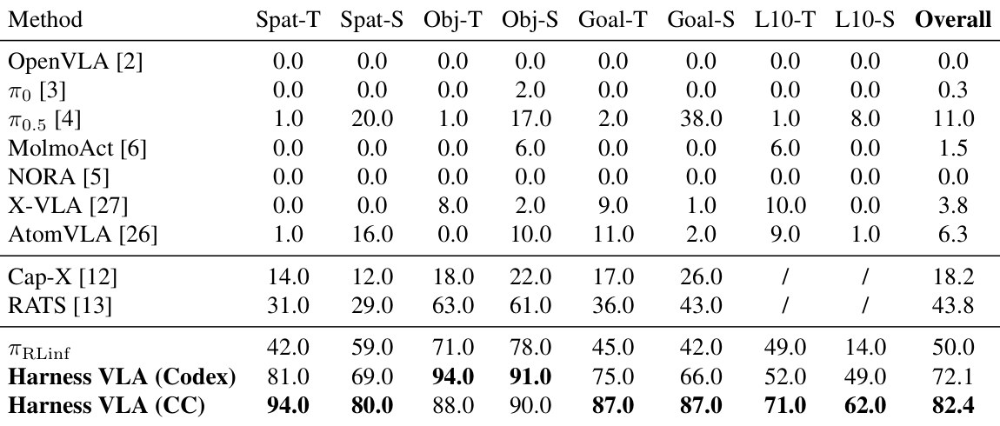
先看最后三行：同一个 πRLinf，直接跑 50.0，经 harness 72.1（Codex）/ 82.4（CC）。再看 L10-S 列：14.0 → 49.0 / 62.0，就是例子所在的格。
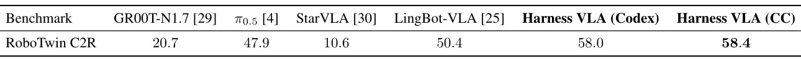
先比 LingBot-VLA 50.4 和 Harness VLA 58.0 / 58.4：同一个后端，+8 pp；trace 来自 clean 设置，直接迁移到 randomized，不再探索。
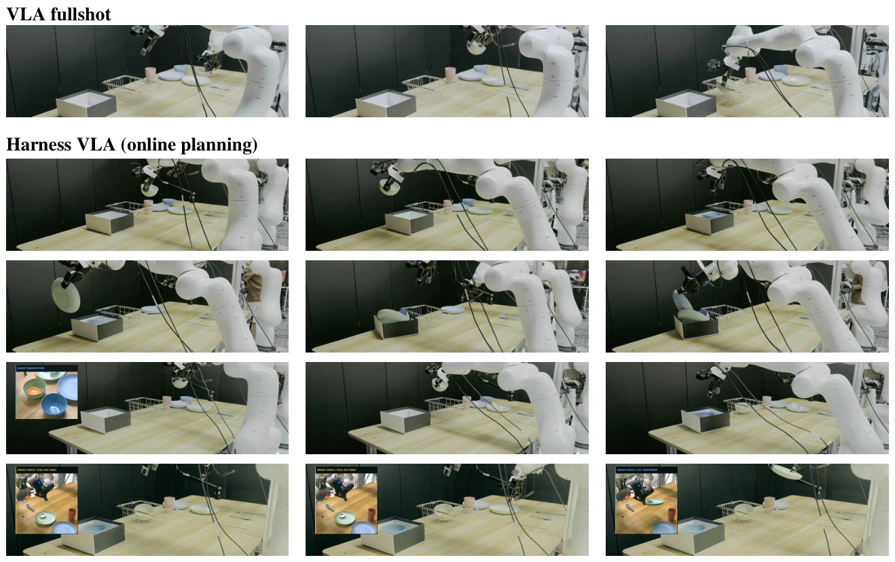
怎么读这张图
- "VLA fullshot"（第 1 行）：冻结的 desk-clearing policy 自己跑：抓碗、交接、放进 basket，只会这一套流程。
- 第 2 行：把碗放到箱子上方、调用放置、再放第二只碗：目标从 basket 改成箱子（target redirection）。
- 第 3 行：先绿盘、再蓝盘，重新定位后放下：按指定顺序（ordered placement）。
- 第 4 行：左上小窗 "AGENT OBSERVATION"：看哪只碗有标记，有标记的放 basket 上方，没标记的送进箱子（visual sorting）。
- 第 5 行：小窗两次 "GRASP CHECK / STILL ON TABLE"，第三帧 "GRASP CHECK / LIFT CONFIRMED"：抓空后张开夹爪重试，确认抬起才交接，这就是例子 Stage 3 的真机版。
Limits
局限和开放问题
- 作者自述：planner 和 VLA 之间是开环反馈；没有用环境 reward 或人类偏好做联合 fine-tune（以后考虑 GRPO 一类的 RL）；缺细粒度 image captioning，杂乱的长程任务里结构推理受限（§6）。
- Headline 是 few-shot：每个任务先在 s0 上带 RESET 探索。zero-shot 只测了 Goal 套件，换位时 31.0 vs 87.0（Table 5）。
- 探索的 wall-clock budget、部署的 step budget 都没给数值；token 用量和费用没报告。
- 比较口径不一：Cap-X、RATS 只有 6 格，且来自各自论文；RoboCasa365 的 WorldDreamer、π0.5、π0 也是引用值；RLDX-1、πRLinf、LingBot-VLA 是作者自己跑的。
- 数字前后不一：Fig. 1 的 RoboCasa365 柱子是 55.4%，Table 4 是 57.2（Codex）/ 48.8（CC），正文写 57.1 / 48.6；arXiv 页面的摘要写 +25.4 pp，v5 PDF 写 +27.1 pp。本页按 Table 4。
- Flash (max) 的选卡和报告用同一批 seed，是回顾式的最好结果（App. G）。
- 真机只有定性演示；reset 和成功判定都靠人（§4）。
- RoboTwin 上增益较小：同一后端 50.4 → 58.4，且 66% 的成功由 VLA 收尾（Table 6、Fig. 6）。
For Robotic harness
对我们有什么用
- 先对齐协议再比数字：82.4% 是 few-shot：每个任务先在 seed 0 上带 RESET 探索并写 memory，再报告 s1–s10；不读 memory 的 zero-shot 在 Goal-S 只有 31.0%（Table 5）。我们的 Codex / Claude Code policy 在 LIBERO-Pro 上如果是 zero-shot，应该对照 31.0 / 79.0；要比 82.4，得先加一个同样的 s0 bootstrapping 阶段。
- VLA_ACT 和文件式 REPL 能直接映射到 Runtime / Supervisor：VLA 只作为一个
{prompt, max_chunks, stop}的 primitive；worker 独占 simulator，planner 只写command.json、读state_NN/log_NN，和 Supervisor 独占 robot mutation 是同一个结构。它的两条 failure model（夹爪合上而物体不跟着动 = 抓空；不凭视觉接近就收尾，要查 benchmark signal）可以写成 Supervisor 的 admission 和 evidence 检查。 - RPent 可以当现成的对照：它的 README 列出 Claude Code、Codex planner 和 LIBERO-Pro、RoboTwin、RoboDojo（都已打勾），SO-101 在列表里但还没打勾。RoboTwin 上它只比同一 VLA 高 8 pp，66% 的成功由 VLA 收尾，所以我们在 RoboTwin 上的提升空间更可能在接触本身，不在编排（推断）。